2.4.5.4.2. Main Tab¶
From the Main tab in Session you can, modify the general session information and add conveners.
A conference is the most comprehensive event in Indico. You should be able to manage its complete life-cycle, for instance, among other functionalities you can setup:
In order to create a conference, you just need to click on Create event and Create conference, in blue bar at the top of the page. You will be presented with a form in which you:
Once this is done your conference will be created and you will be redirected to the Management Area of the conference. If you want to see the Home page of your conference, click in the link View event page.
The creator of this conference will by default have modification rights to it and is referred to as a Conference Manager as is anyone else listed in the Modification control list.
Remember that the category, in which you want to create your conference, must be public or you must have access rights to it.
To access the Management Area of a conference you need to
click on the modification icon  in the top bar of the event
home page.
in the top bar of the event
home page.
Once your conference has been created the Conference Manager can start setting up the conference from the Management Area.
The Management Area allows you to control, manage, setup and modify the different parts of your conference. The following sections will show each area of the Conference Management.
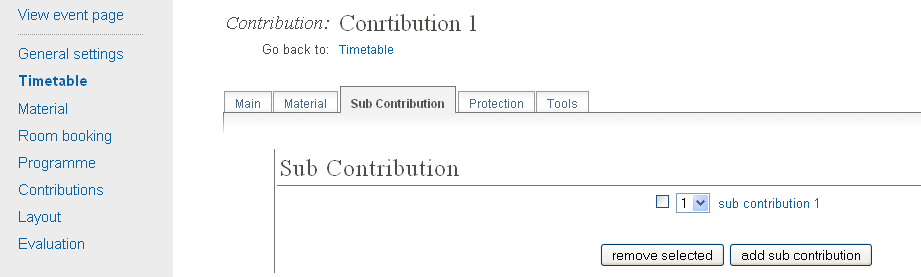
Clicking on the link View event page will take you to the home page of the event.
From the option General Settings in the left menu you can:
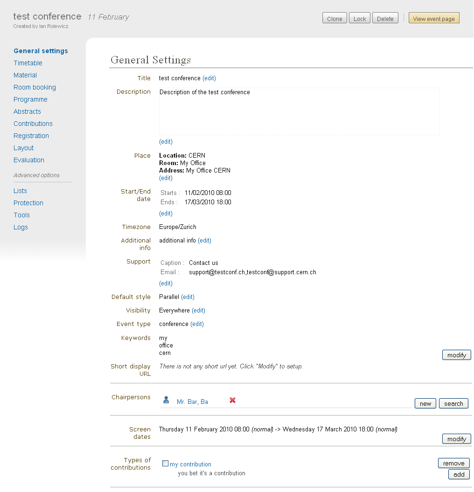
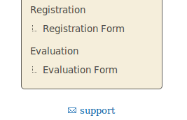
From the Programme menu (on the left menu) you can add/remove tracks and access each of the tracks (see Tracks below)
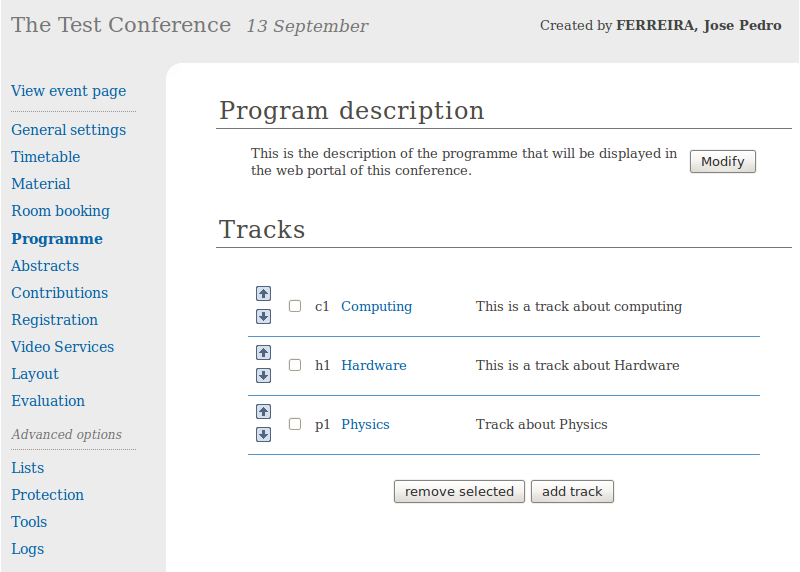
Tracks are parts of the conference to which abstracts and contributions can belong. Inside tracks you can do the following:

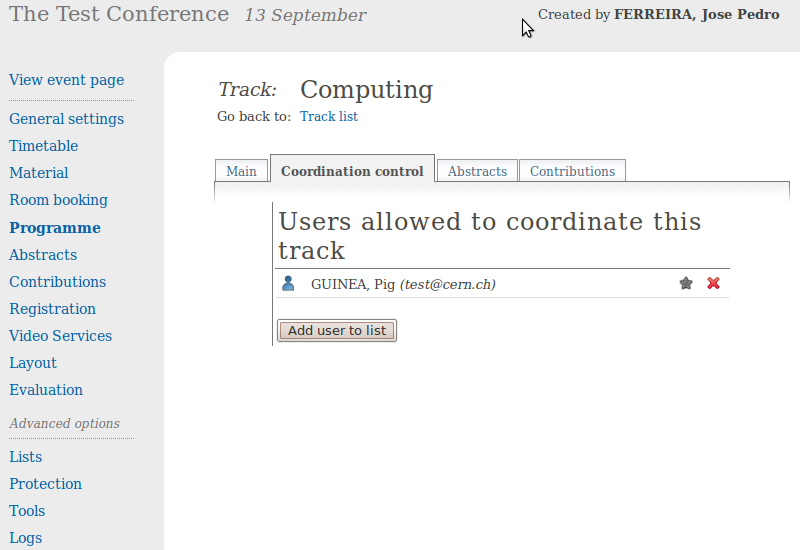
The Contributions menu shows all the contributions to the conference. These may be either accepted abstracts or abstracts added by the Conference Managers.
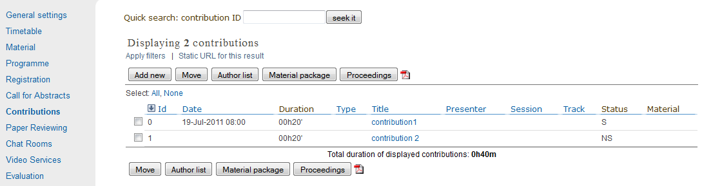
From the Contributions menu you can:
You can also filter the list of contributions by session, track, contribution type, status (scheduled, not scheduled, withdrawn) and material. In order to open the filtering criteria, you must click in the small arrow close to Filtering criteria, choose the options you want to match, and press the button apply filter.
Each contribution has its own management area.
From inside the Main tab you can:
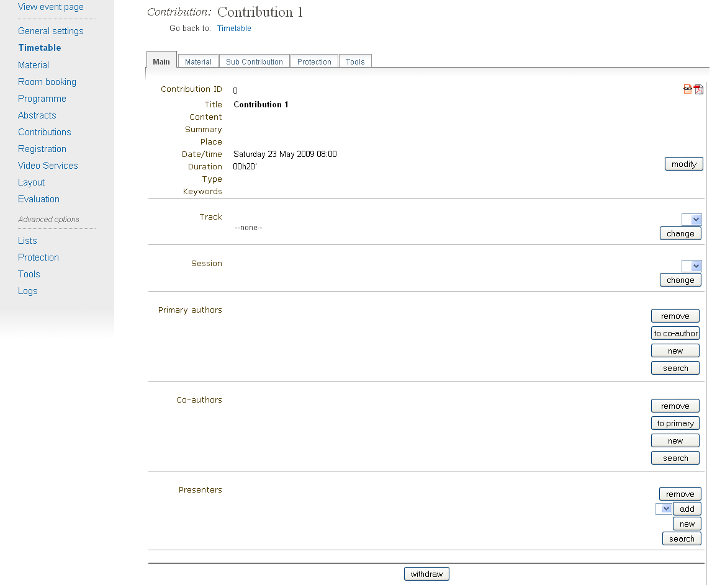
From the Material tab you can add and access the material of the contribution (see Material).
From the Sub-contributions tab you can:
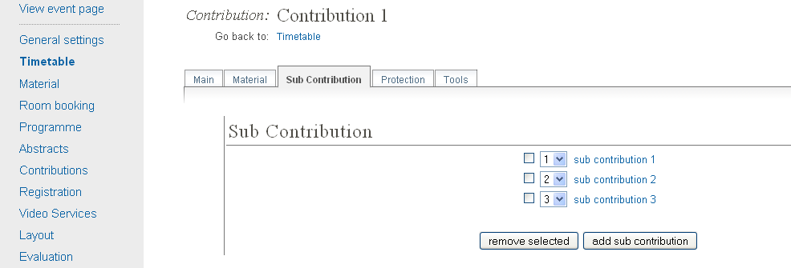
From the Access Control tab you can:

From the Tools tab you can:
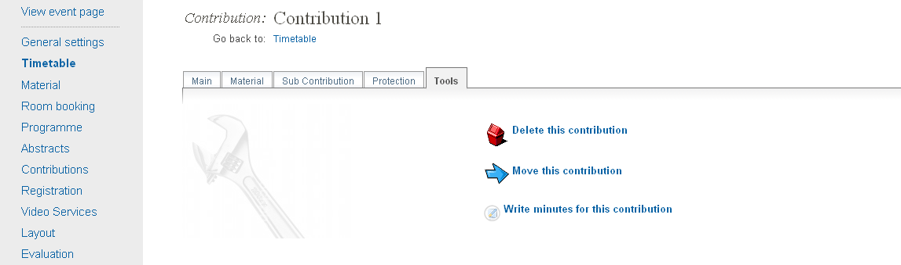
Sub-contributions can be added to a contribution to organize the contribution further.
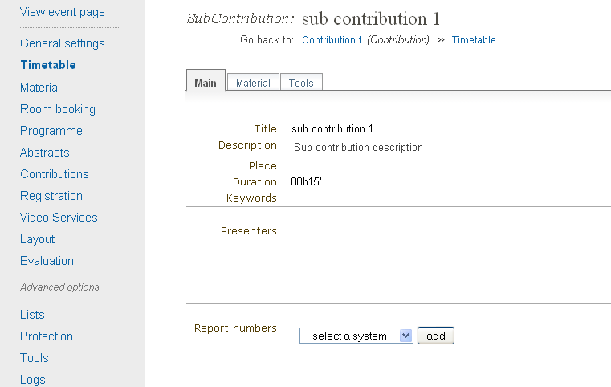
From inside each sub-contribution you can modify the general details, add or remove presenters, and attach material in the same way as you can for contributions. From the Tools tab in a sub-contribution you can delete that sub-contribution or write the minutes for it, these will be attached to the material for the sub-contribution.
Material can be submitted by a user once the abstract has been accepted and made into a contribution. Material can also be added by the Conference Manager directly to the conference, or to a contribution or sub-contribution.
You can upload files or simply add URL links.

Access rights can be set for each material. From inside Access Control you can list those users that can view the material.
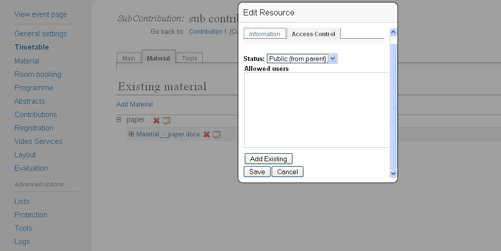
The Abstracts Management in Indico has four tabs:
The call for abstracts needs to be enabled first from the Setup tab. From here you can set:
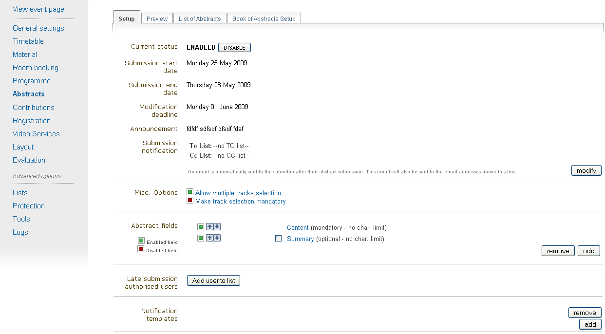
A notification template is an email template that the conference organizer can pre-defined and that will be automatically used by Indico under certain circumstances (when an abstract is accepted, rejected or merged).
In order to create a Notification Template you have to:
%(conference_title)s
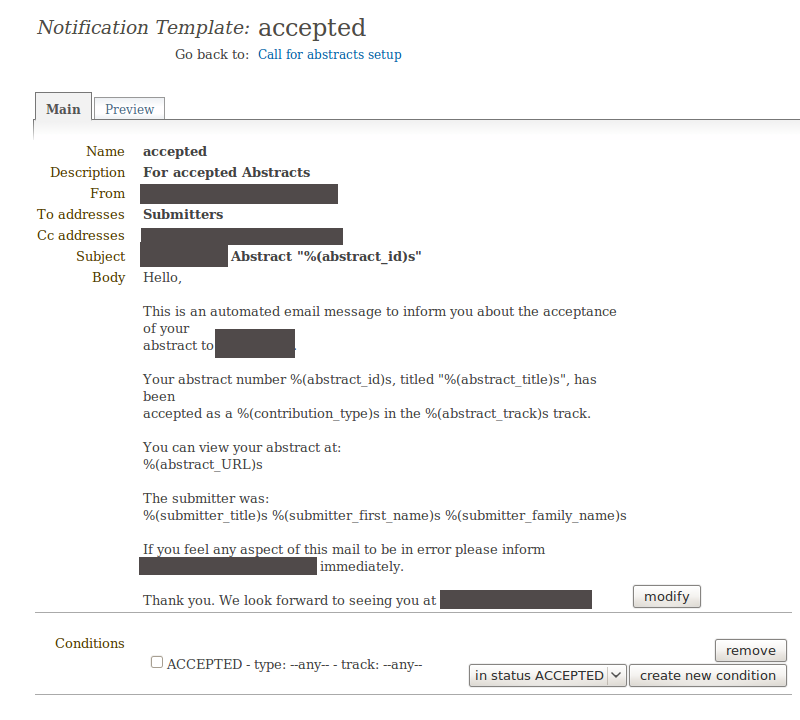
The List of Abstracts tab shows all the abstracts that have been submitted to the conference:
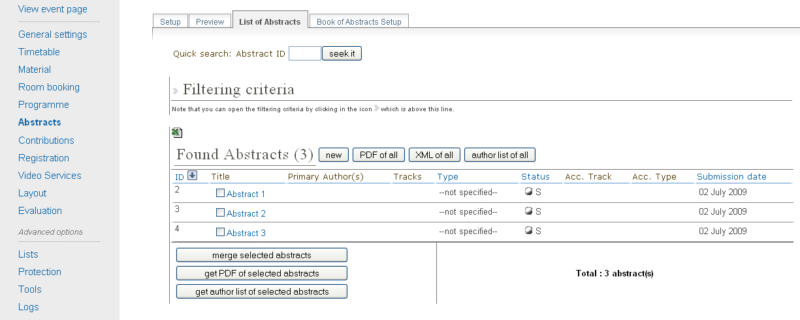
From the List of Abstracts tab you can add new abstracts, create PDFs of the abstracts, create an XML file of abstracts, and obtain the authors list. You can also access each abstract see Abstracts; an abstract can be in one of 10 states:


As for contributions, there is a Filtering criteria panel that you can open by clicking in the little gray arrow. You can choose the type of abstracts you want to display and apply it to the list.
An abstract is either submitted by a user or manually added by a Abstract Manager (conference organizers). Once an abstract is accepted it is automatically changed into a contribution and added to the contributions list in the conference (see Contributions Management).
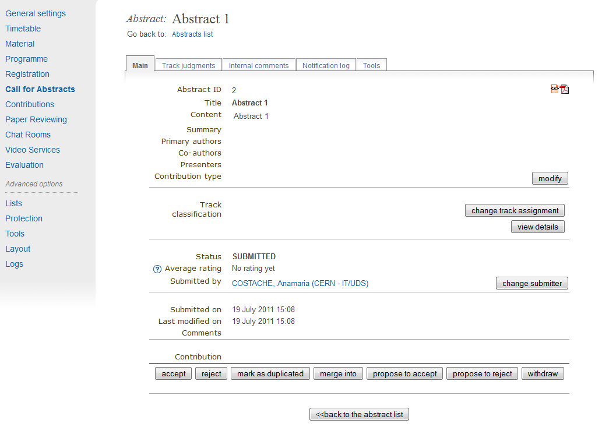
From inside Abstract Management, the Conference Manager can change the status of an abstract, for example, by accepting it or marking it as a duplicate.
The main details of the abstract can be modified and the track to which it is associated can be changed as well as the user that submitted it. Any comments made by the Track Manager or Conference Manager while changing the status of the abstract can be viewed from the tab Track judgements.
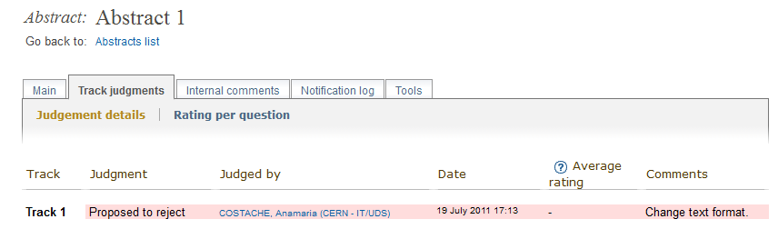
Internal comments can be made from the tab Internal comments (it’s like a message box). And a notification log, with the emails sent to the author, can also be viewed from inside the tab Notification log.
The Book of Abstracts tab lets you add any additional comments that you would like to appear in the first page of the book of Abstracts. This is a PDF file which can be generated from the conference home page (see Conference Display) containing all the abstracts.
You can organise your conference from the Timetable tab in a conference. When you start with a timetable it will look like this:
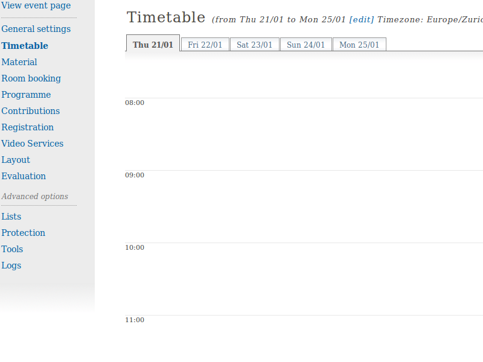
You can modify the start and end dates of the timetable, and you can start adding sessions, breaks, and contributions to your timetable.
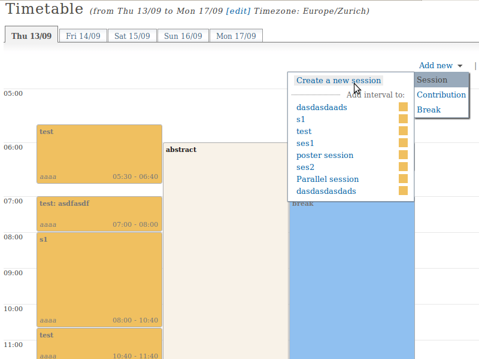
In order to edit the entries in the timetable, you just need to click on the entry box and edition balloon will show up.
A session is essentially a time interval within which you organise many presentations of your conference. You can create sessions base on different reasons:
To add a session to your timetable, use the menu Add new and the option Session > Create a new session, at the top of the timetable. This will present you with a form that you fill in with the details of your session. Once the session is created it will appear in your timetable.
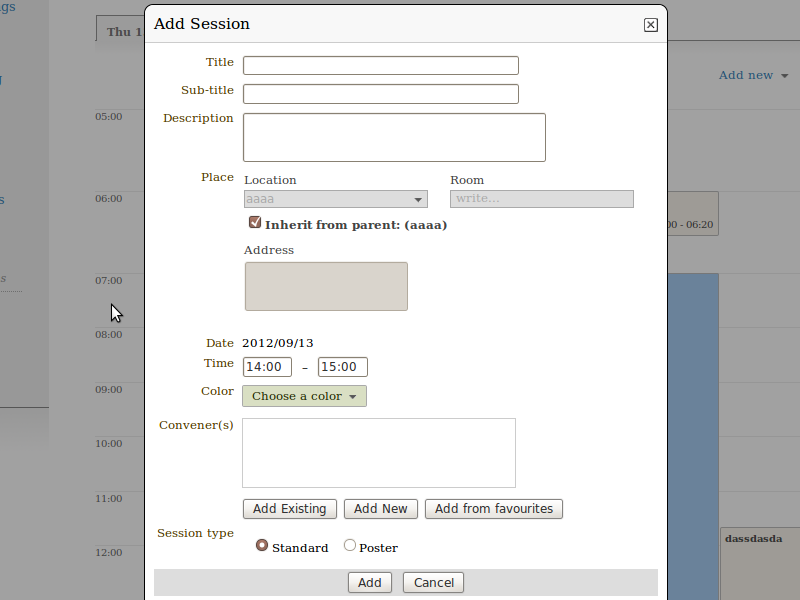
From the same menu Add new but in the option Break you can add a break.
In order to modify sessions and breaks, you need to click on the entry and an edition balloon will be displayed. For sessions, you can edit their inner timetable with their own contributions and breaks, from the edition balloon and the link View and edit current interval timetable.
To add a contribution to your timetable use the option Add new > Contribution. Here, there are two possible situations:
1. If there are already some unscheduled contributions (see Contributions Management), Indico will show a list of then in which you can select the contribution(s) you want to add. Also, you can choose to create a new one.

2. If there are not unscheduled contributions, the form for the creation of a new contribution will be shown.
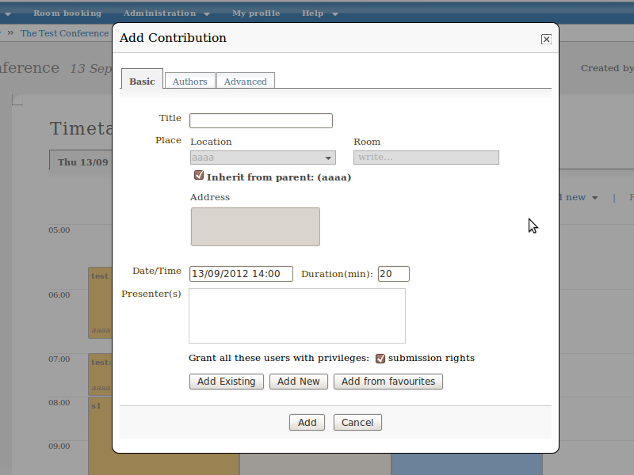
As for sessions and breaks, you can edit a contribution by clicking on its entry box and using the edition balloon.
You can access the Management area for a session from the edition balloon (this is the balloon that appears when clicking on the entry), by clicking Edit > Session properties.
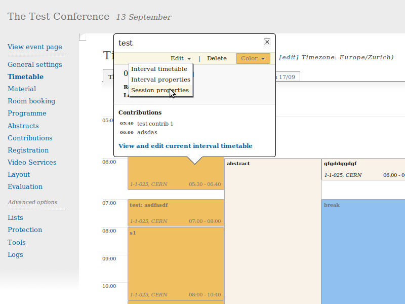
This new page will allow to modify everything within that Session. You will see different tabs from which you can:
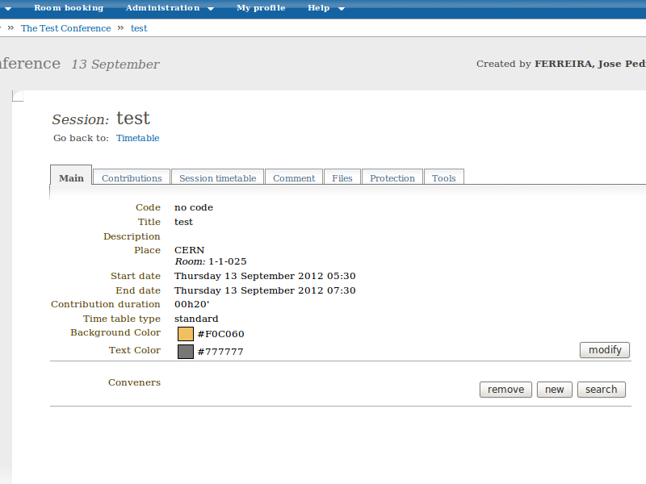
A session can happen in different intervals of time. If you already have a session (which will be like the first interval) and you want to add more intervals for that session, you can do it from the menu (in the top bar of the timetable) Add new > Session > Add interval to: an already existing session.
However, this is optional, intervals can be used when the session takes place over more than one period of time. For example, if you may have a morning interval, then a break, and then an afternoon interval within the same session. Also, you may have one day you have a session on a particular subject for a couple of hours and then two days later you may have another session on that subject.
From the Main tab in Session you can, modify the general session information and add conveners.
From the Contributions tab you can see all the contributions that are part of your session. These contributions will only be shown once they have been added (see Adding Contributions to Sessions).
From the Protection tab in Session you can set the access rights for modification, access, and domain control in the same way as you can for the conference (see Protection Management). The only difference is the Co-ordination control in which you can assign someone to be the Co-ordinator, which means they can add and remove contributions and breaks to that particular session.
From the Tools tab in Session you can delete that session or write minutes for the session.
Inside sessions, you can create new contributions from the timetable or add unscheduled contributions (which have already been created and will be placed in the timetable later on). Here, we will see how to add/import contributions that have already been created.
To add contributions to a session you first need to import them from the main conference, to do this use the Contribution tab inside the session:
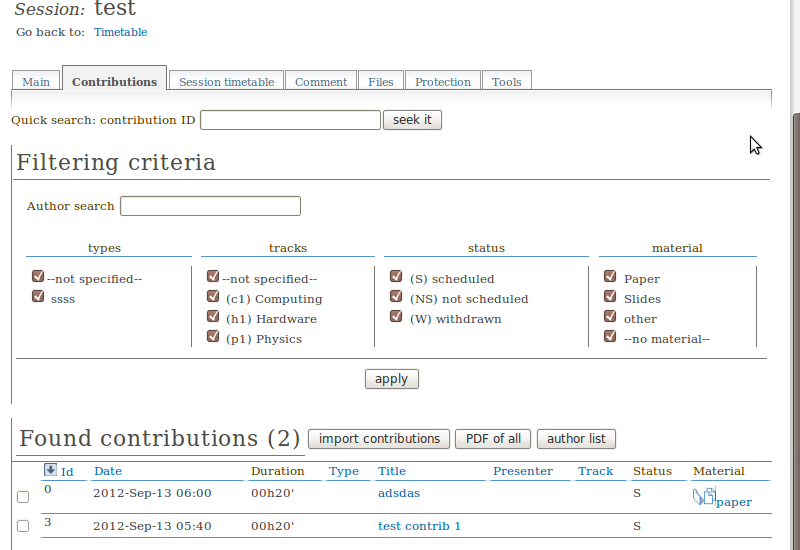
Click on import contributions, this will take you to a screen where you can select the contributions you want to include in your session.
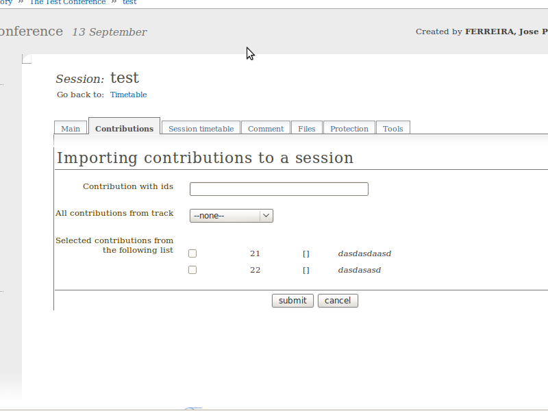
Once you have selected the contributions they will appear inside the Contributions tab in the session. You can then use the option Add new > Contribution from the Session timetable and select from the contributions you imported. When you have added a contribution to your session timetable you can edit the times and duration by clicking on the contribution box.

Protection in a conference is similar to that in a Category (see Protection). There is Modification Control, Domain Control and Access Control. When adding to the Access and Modification lists, you can also add Groups of users if any have been defined by Administration.
Modification Control Only the Managers listed in the Modification Control, the Creator of the conference, and any Administrators can access the Management Area of the conference. However, you can add a Modification Key which means anyone with this key can modify the conference without logging in.
Access Control When the conference is public, anyone can view the conference including the programme, timetable, abstracts, etc. When the conference is private, only those in the Access List, Conference Managers and Administrators can view the conference.
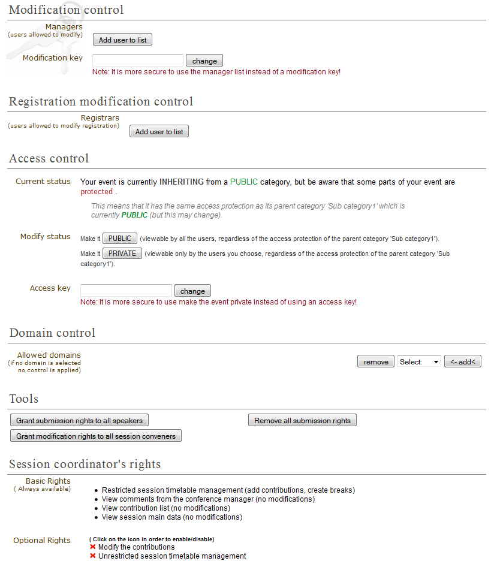
When private you can also add an Access Key which means anyone with this key can access the conference without logging in. Users will get a message as the following:

Domain Control This option is only for public events. It allows to specify which domain (e.g. CERN) can access the conference. Therefore, just people from inside this domain will be able to access.
You may wish to have some kind of registration process for those attending your conference. Here you can give the registrants options such as accommodation or any specific needs. The Registration Management comes in two parts: the Registration Form and the Registrants.
You can access the registration module from the option Registration in the menu of the left.
From the Setup tab you can enable or disable the registration. You can also modify the start/end dates of registration, the maximum number of registrants you will take, any announcements and if you want to receive an email when a new registrant applies.
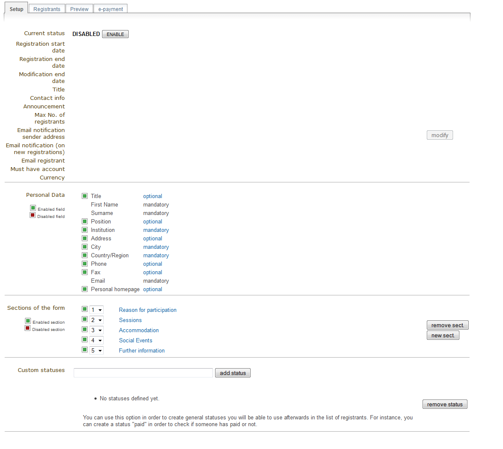
The registration form is split in sections. Each section is an part
in the registration form with many fields in it.
You can choose which sections of the form you wish to use
(see the following sections listed below). To enable or disable one of these
sections, click on the  image next to that section, when it is
red it is disabled and when it is green it is enabled. Clicking on the
section name will let you modify it to allow the registrants to enter the
information you need (see Registration Area).
image next to that section, when it is
red it is disabled and when it is green it is enabled. Clicking on the
section name will let you modify it to allow the registrants to enter the
information you need (see Registration Area).
The Reason for participation form allows you to ask the registrant why hey wants to participate. From this form you can modify the question and title of the form.
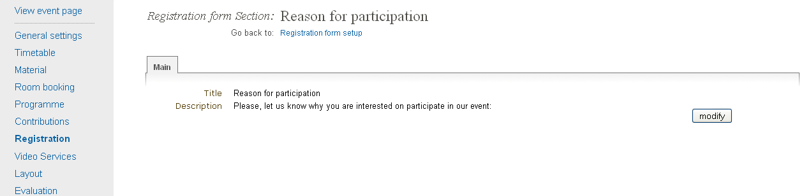
The Sessions form allows you to add which sessions from your conference you would like people to register for. From the form you can also change the title, description, and the type of session’s form (2 choices, they can choose just two sessions; multiple, they can choose any session).
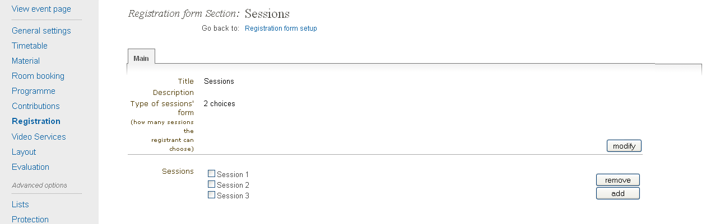
The Accommodation form lets you add or remove the different types of accommodation available to your registrants or give them the choice to book their own.
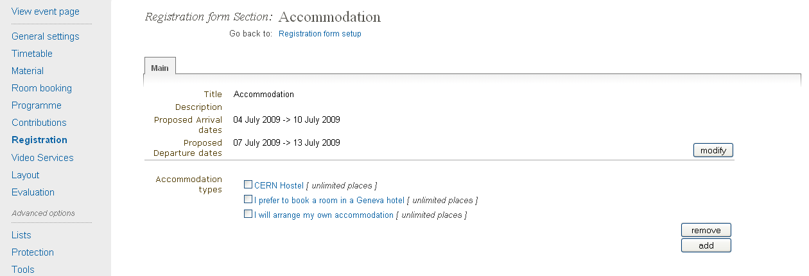
The Further Information form gives you the opportunity to add any additional information for the registrants.
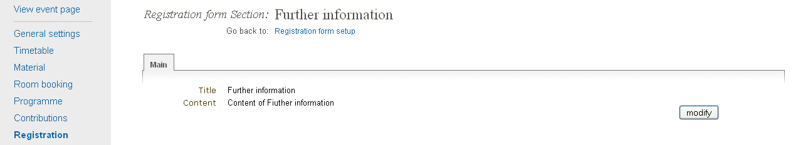
From the button New sect., you can create a customizable section for your form. Inside the section, you can create any number of fields from different kinds (text, textarea, checkbox, etc). Also, this fields will have the option to be billable, meaning that they can have a price attached. Therefore, the form can be used with online payment system.

The Registrants tab will show a list of all the registrants for your conference.
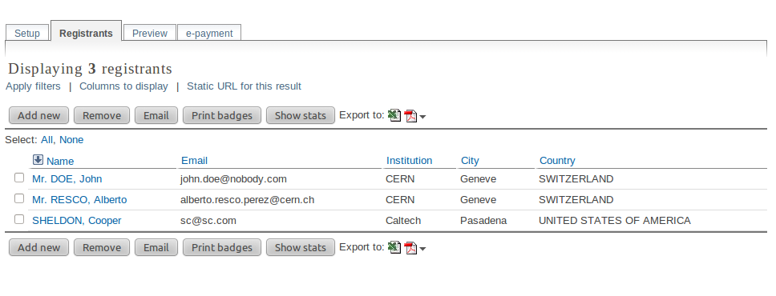
Clicking on the registrant’s name will show you all his details and the information he provided in response to the form’s questions.

The display area allows you to customize your conference. You can customize the menu that will be shown in the conference display (see Conference Display), change the colours of the conference background/text, add a logo, and much more.

You can change the background colour of the conference header by using the Conference header background color option.
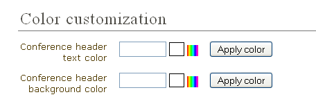
The same can be done for the text colour by using the Conference header text colour option.
If you want to add your own logo to the conference display you can add it from the logo area in display. You can browse for you logo, save it, and see it in the preview box.
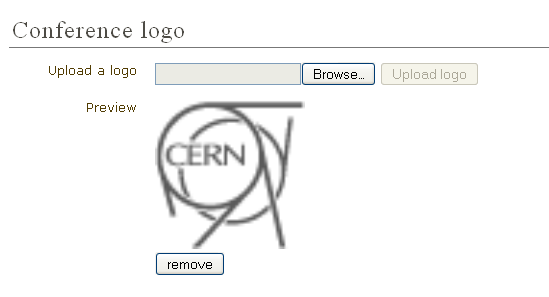
The conference Tools allow you to carry out certain actions on the whole of the conference.
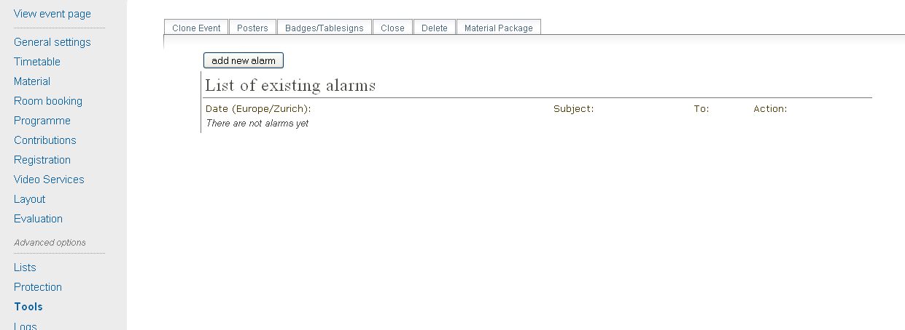
The Delete option will delete the whole conference and there is not an undo tool so far. You will be asked to confirm deletion first.
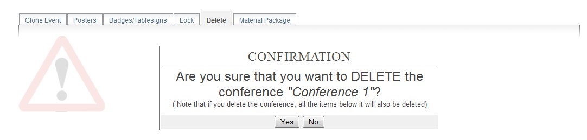
Clone the conference if you would like to make another conference exactly the same. You have the option to clone it once, at fixed intervals, or on certain dates.
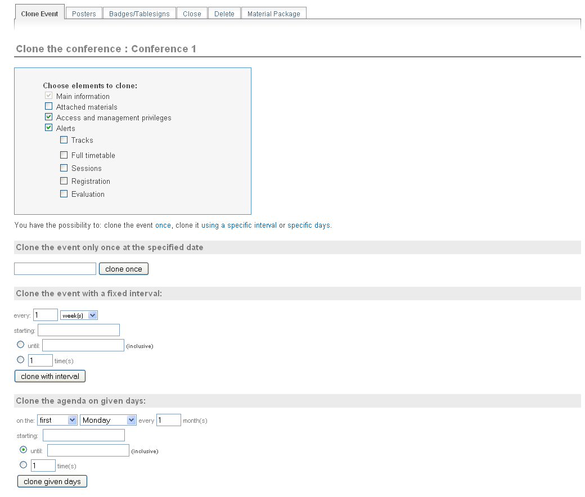
Using the Material package option you can create a package of all the materials that have been used in the conference.

You can set an alarm/reminder to alert people about the conference; the alert will be in the form of an email and it will be automatically sent when you wish it to happen.

The Conference Display is the view that users of the conference will see. If the conference is public they will not need to log in to view the conference. It is also the area in which you can access the modification areas if you have access rights. The different areas of the conference can be seen using the left-hand Display Menu. This menu may be different if the Conference Manager has customized the menu. When a conference is accessed the Overview area is shown first.
Various parts of the conference display are always present in order for you to navigate or view the display area:
This is placed at the top left of the display view and will take you back to home page of Indico.
 This is also placed at the top left of the display
view and allows you to use additional features (e.g. export
the details of the conference in iCalendar format)
This is also placed at the top left of the display
view and allows you to use additional features (e.g. export
the details of the conference in iCalendar format)
 This will be underneath the display menu and enables
you to email the event support if conference management have
entered one.
This will be underneath the display menu and enables
you to email the event support if conference management have
entered one.
 This is placed at the top right of the screen and is
the access for logging in or out.
This is placed at the top right of the screen and is
the access for logging in or out.
The Overview Area shows the main details of the conference including any material that is included and the date and location of the conference.
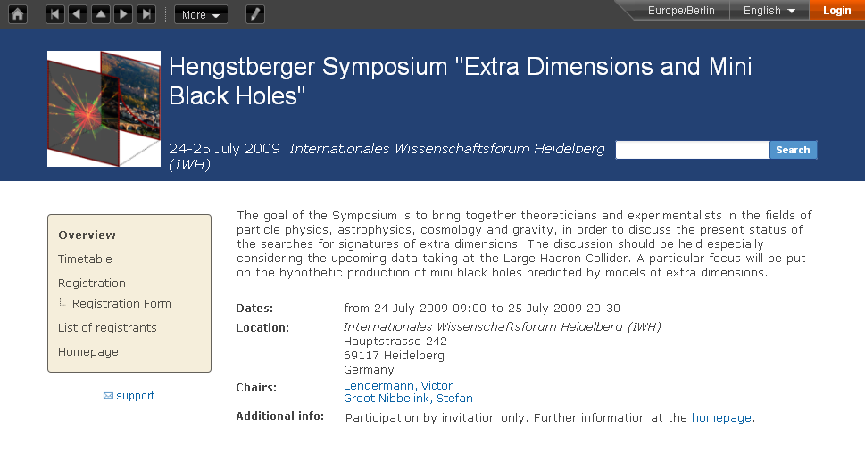
The Call for abstracts view will show the range of dates during which an abstract can be submitted.

From within the Call for abstracts a user can submit an abstract and view the abstracts they have submitted.
You need to be logged in as a user and the dates of submission must be in the time range to allow you to submit an abstract. Once logged in you can fill in the form to submit your abstract.
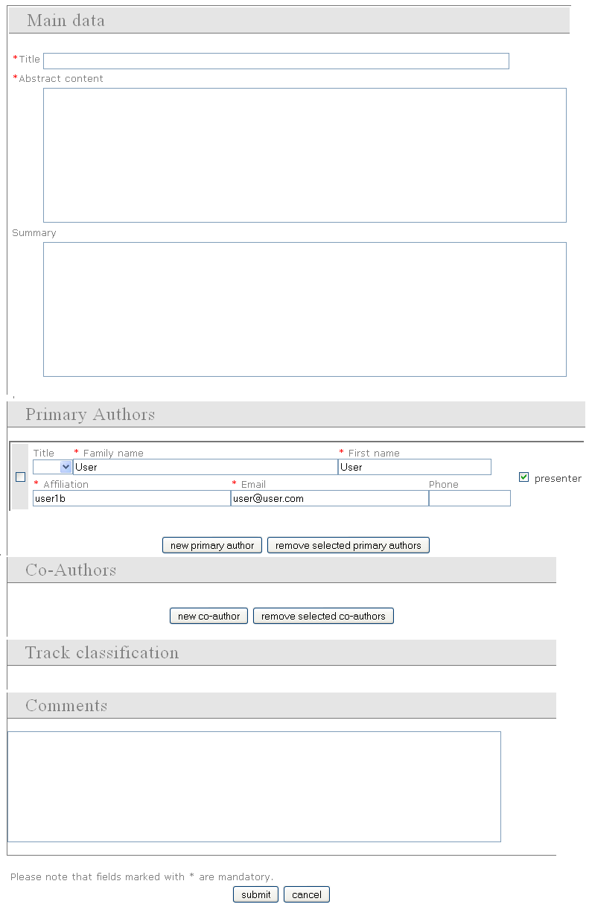
You need to fill in the title, content, and author details. If you need to you can add any co-authors. You can also choose which track you would like your abstract to be included in as well as any comments you would like to add. You will receive an email notification after submitting.
You can view and see the status of any abstracts you have submitted. You can also create a PDF of your abstracts. By clicking on the abstract name you will see the details of the abstract.
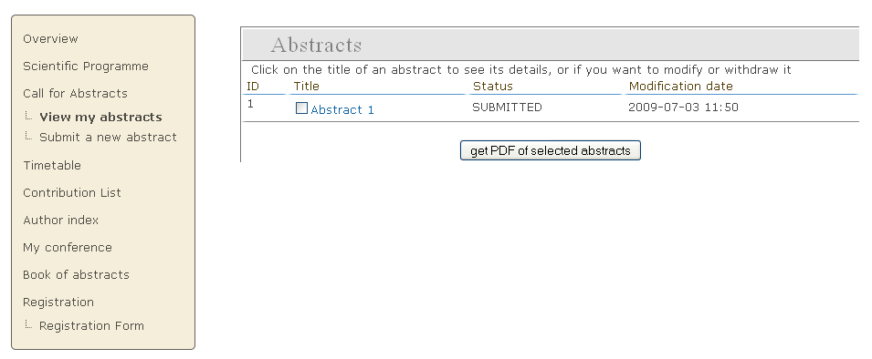
When you click on an abstract’s title you will be taken to the abstracts view. This shows all the details of the abstract.
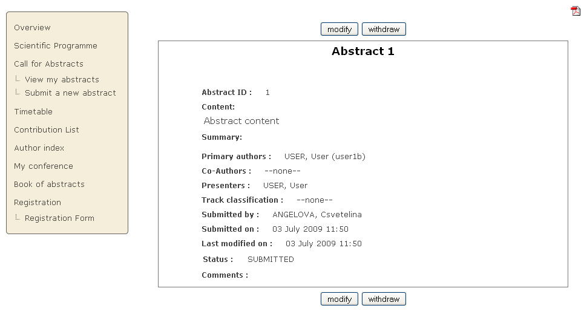
You can print the details of this abstract as a PDF using the icon in the top right corner.
The Author Index shows all the authors with contributions in the conference; the authors can be searched for by name.
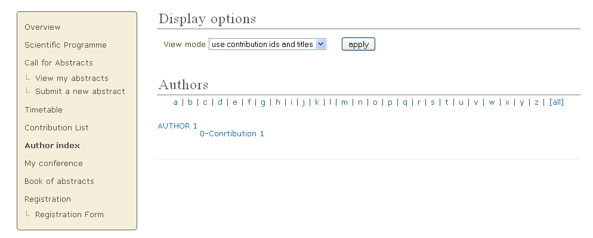
The contribution(s) (see Contribution Display) they have written and the details of the author can be accessed by clicking on the name.
The Author Display shows the details of the author, e.g., contact details and the contribution(s) he has authored.
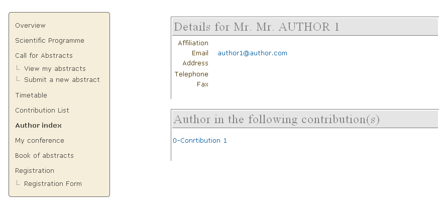
Contribution List in the menu takes you to all the contributions in the Conference. From here you can see a list of all or just certain types of contributions that you want to see, for example, only those contributions in a specific session.
You can access the display of each contribution by clicking on its name. You can also create a PDF of either selected contributions or all of them.
In the Contribution Display you can see all the details of the contribution, including the description, the author, the session (if any) it is included, any material (see Contribution Material Display) it has and any sub-contributions that belong to it. You can also access those details by clicking on their names. You can also print the contribution in PDF, XML, or iCal format by using the icons in the top right-hand corner.
If you have modification rights, you will have the modification icon next to the print formats and you can access the Contribution Modification Area.
The material that belongs to a contribution can be viewed by accessing the Contribution Display (see Contribution Display). Here, there is a section Material with all the resources attached.
Click in Add Material in order to upload more, in the edit icon to modify, or in the red cross to remove it.
The My conference area gives you access to those areas for which you have Co-ordinator modification rights. For example, if you are a Track Co-ordinator or a Session Co-coordinator those tracks or sessions will appear under My conference.
From here you can access your Tracks Modification (see Tracks) or Session Modification (see My Conference: Session Co-ordination) by using the modification icon on the left of the title.
The session Modification accessible from My conference is slightly different from the Main Session Modification as you are restricted to the Main tab and adding/removing contributions and breaks:
The Registration Area shows you the dates in which you are able to register, the maximum number of registrants allowed and any contact information.

From the New Registrant Area people can fill in the forms that were chosen and customized from the Registration Management (see Registration Management). The registrant will need to fill in their personal information and anything else in the form that has been asked for.

Once your registration has been submitted you will be shown a screen to confirm your registration.
If the epayment is enabled. The user will be able to click the button next and proceed with the payment online.
The menu option which was New registration will also change to Modify my registration. This will present you with the form you filled in originally and will allow you to change the information you originally provided.
The Book of Abstracts selection in the menu will produce a PDF document of all the accepted abstracts (abstracts that have become contributions) that are scheduled in the conference. It also shows any contributions that are scheduled.
The Scientific Programme shows all the tracks with their descriptions:

You can create a PDF document of all the tracks using the PDF icon in the top right-hand corner If you are a Co-ordinator of any tracks, you will have the modification logo next to that track and a Manage my track option in the menu as in the picture above.
The Timetable area shows all the session, contributions, and breaks for the conference. You can access each session content by clicking on the session name. This will show you any contributions/breaks inside this session.

Clicking on a contribution name will take you to the display view of that contribution (see Contribution Display). You can display the timetable for certain days or sessions and choose the detail level using the Filter options.
Session View allows you to see any contributions or breaks within each session:
If you are a Session Co-ordinator or a Session Manager you will have the modification icon in the top right-hand corner as above. This will take you to the appropriate Modification area for that session. You may also make a PDF of the session.
2.4.7.1.4. Social Events¶
The Social Events form allows you to add/remove any social events for which registrants can register. When you add an event you add the title of this event.
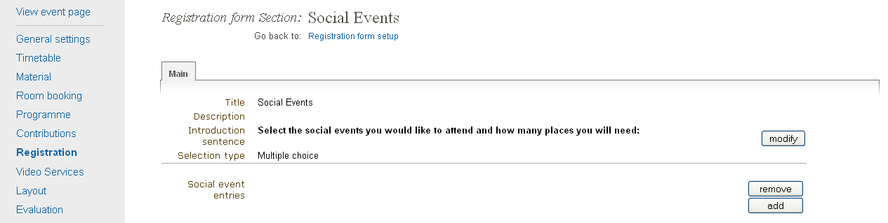